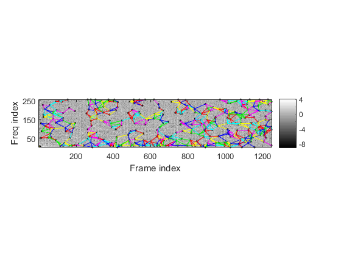
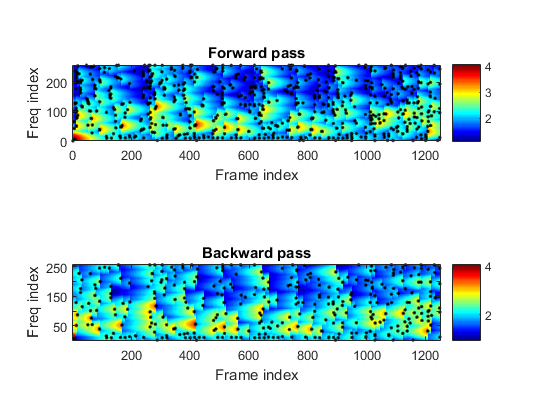

Contents
Tutorial on using the Audio Fingerprinting Toolbox
The Audio Fingerprinting Toolbox provides serveral functions to perform audio fingerprinting, including feature extraction, database construction, and performance evaluation.
The following demonstrates how to find landmarks and plot the spectrogram
auFile='bad_romance_short.wav';
au=myAudioRead(auFile); y=au.signal; fs=au.fs;
afpOpt=afpOptSet0;
[lmList, specMat, threshold1, peakTable1]=afpFeaExtract(y, fs, afpOpt, 1);
afpFeaExtract: 40 sec, 1249 cols, 786 peakTable, 349 bwd-pruned peakTable, 836 lmarks 
Database construction
To create a database for AFP:
audioDir = fullfile(afptRoot, 'dataset/music4db');
afpOpt=afpOptSet0;
db=afpDbCreate(audioDir, afpOpt);
Collected 3 files from d:\users\jang\matlab\toolbox\audioFingerprinting\dataset\music4db for constructing the database... 1/3: file=d:\users\jang\matlab\toolbox\audioFingerprinting\dataset\music4db/AiPingCaiHuiYing_yeh.mp3 ===> hashCount=4253, clip duration=222.877 sec, computing time=1.87079 sec 2/3: file=d:\users\jang\matlab\toolbox\audioFingerprinting\dataset\music4db/Say You Say Me_Lionel Richie.mp3 ===> hashCount=4280, clip duration=241.868 sec, computing time=2.05049 sec 3/3: file=d:\users\jang\matlab\toolbox\audioFingerprinting\dataset\music4db/The Power Of Love_xxx.mp3 ===> hashCount=5625, clip duration=343.719 sec, computing time=2.92462 sec Total hash count = 14158, total clip duration = 808.464 sec, no. of invalid songs = 0 Total time for database creation: 6.849854 seconds
For each audio file, we need to create a key such that each query can be associated with:
for i=1:length(db.audioData) db.audioData(i).key=db.audioData(i).mainName; end
Query corpus collection
Then we can collect the queries for testing AFP, as follows:
queryDir = fullfile(afptRoot, 'dataset/music4query'); format = 'mp3'; queryData = recursiveFileList(queryDir, format); fileNum = length(queryData); fprintf('\nStart performance evaluation of %d recordings:\n', fileNum); dbKey={db.audioData.key}; for i=1:fileNum index=find(queryData(i).name=='_'); queryData(i).key=queryData(i).name(1:index(end)-1); queryData(i).gt=find(strcmp(queryData(i).key, dbKey)); end
Start performance evaluation of 2 recordings:
Performance evaluation
The query file was chopped into 10-second segments for testing AFP. Once both the query set and the database is ready, we can test the performance of AFP:
[overallRr, queryData]=afpPerfEval(queryData, db, afpOpt, 1);
1/2: file=AiPingCaiHuiYing_yeh_noisy01.mp3 1/10: time=0.266113 sec, predicted=1 (AiPingCaiHuiYing_yeh) 2/10: time=0.262697 sec, predicted=1 (AiPingCaiHuiYing_yeh) 3/10: time=0.269195 sec, predicted=1 (AiPingCaiHuiYing_yeh) 4/10: time=0.264389 sec, predicted=2 (Say You Say Me_Lionel Richie) 5/10: time=0.275832 sec, predicted=2 (Say You Say Me_Lionel Richie) 6/10: time=0.273667 sec, predicted=1 (AiPingCaiHuiYing_yeh) 7/10: time=0.266761 sec, predicted=1 (AiPingCaiHuiYing_yeh) 8/10: time=0.26481 sec, predicted=1 (AiPingCaiHuiYing_yeh) 9/10: time=0.266731 sec, predicted=2 (Say You Say Me_Lionel Richie) 10/10: time=0.272703 sec, predicted=1 (AiPingCaiHuiYing_yeh) 2/2: file=The Power Of Love_xxx_noisy01.mp3 1/21: time=0.263072 sec, predicted=3 (The Power Of Love_xxx) 2/21: time=0.280216 sec, predicted=3 (The Power Of Love_xxx) 3/21: time=0.26876 sec, predicted=3 (The Power Of Love_xxx) 4/21: time=0.266829 sec, predicted=3 (The Power Of Love_xxx) 5/21: time=0.273215 sec, predicted=3 (The Power Of Love_xxx) 6/21: time=0.274798 sec, predicted=3 (The Power Of Love_xxx) 7/21: time=0.27247 sec, predicted=3 (The Power Of Love_xxx) 8/21: time=0.277012 sec, predicted=3 (The Power Of Love_xxx) 9/21: time=0.269522 sec, predicted=3 (The Power Of Love_xxx) 10/21: time=0.274291 sec, predicted=3 (The Power Of Love_xxx) 11/21: time=0.267998 sec, predicted=3 (The Power Of Love_xxx) 12/21: time=0.275779 sec, predicted=1 (AiPingCaiHuiYing_yeh) 13/21: time=0.285874 sec, predicted=3 (The Power Of Love_xxx) 14/21: time=0.27135 sec, predicted=3 (The Power Of Love_xxx) 15/21: time=0.263786 sec, predicted=3 (The Power Of Love_xxx) 16/21: time=0.27024 sec, predicted=3 (The Power Of Love_xxx) 17/21: time=0.266166 sec, predicted=3 (The Power Of Love_xxx) 18/21: time=0.273407 sec, predicted=3 (The Power Of Love_xxx) 19/21: time=0.264469 sec, predicted=1 (AiPingCaiHuiYing_yeh) 20/21: time=0.269099 sec, predicted=3 (The Power Of Love_xxx) 21/21: time=0.2692 sec, predicted=3 (The Power Of Love_xxx) Overall recognition rate: 83.871% Total running time: 8.986529 sec Average retrieval time per query: 0.270337 sec 1/2: Song name = AiPingCaiHuiYing_yeh.mp3, queryClipCount=10, accuracy=70% 2/2: Song name = The Power Of Love_xxx.mp3, queryClipCount=21, accuracy=90.4762%
Copyright 2012-2016 Jyh-Shing Roger Jang.